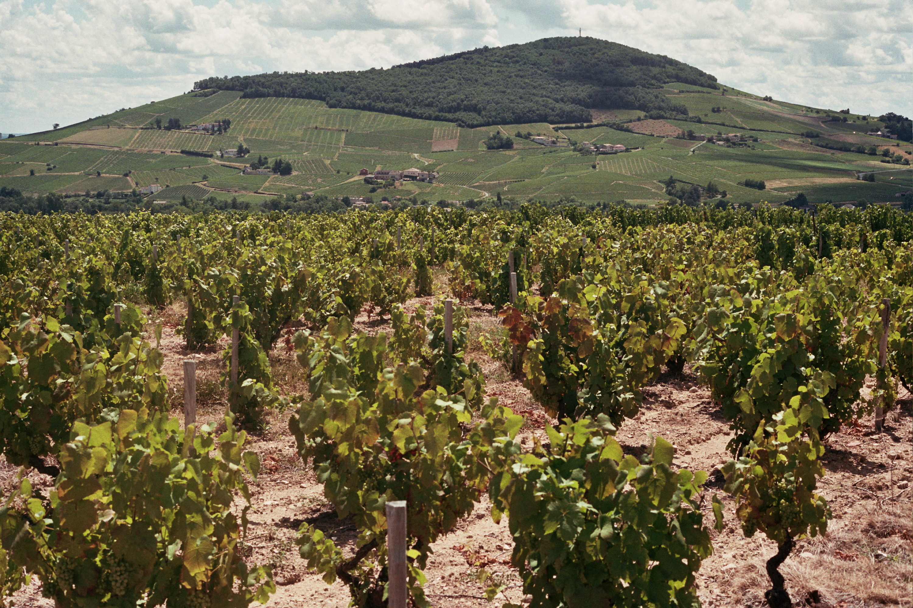
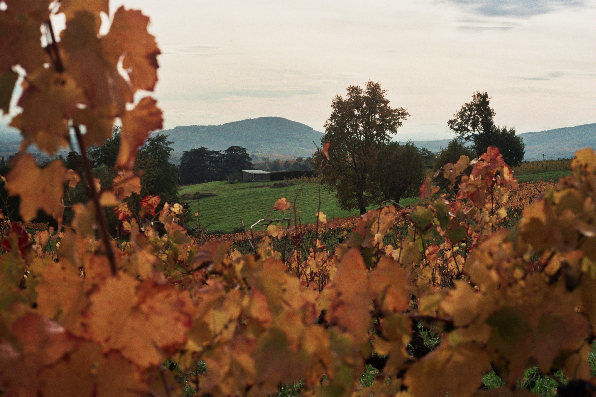

Mont Brouilly
Toen kunstenares Etel Adnan de vraag kreeg wie de belangrijkste persoon is die ze ooit ontmoette, antwoordde ze: “een berg”.
Lees meer

Chablis
Voor reizigers die vanuit onze contreien naar Bourgogne trekken, komen we in Chablis als eerste grote wijngebied van de streek uit, ook wel de gouden poort van Bourgogne genoemd, waar de wijngaarden haast elk stukje land hebben ingepalmd en enkel de chardonnaydruif staat aangeplant waarmee men de typische frisse, minerale witte wijn produceert die de naam Chablis mag dragen.
Lees meer

Jean Rollin: vervreemding in de wijngaarden
Een zonnige, herfstige dag op de wijngaard, een bekend tafereel: verschillende tinten bruin, kale ranken en bladeren op de grond, en toch krijgt het landschap iets vreemds door de aanwezigheid van een groep mannen die zich zwijgend tussen de ranken voortbewegen. ...
Lees meer